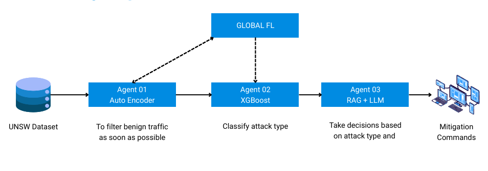
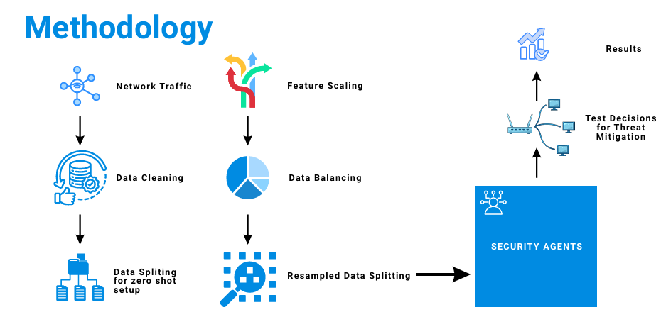

Agent 1
VAE Anomaly Gate
Final Year Research Project
Department of Computer Engineering, University of Peradeniya
Research Overview
This project proposes a federated, multi-agent defense pipeline that combines fast anomaly screening, privacy-aware threat classification, and adaptive response policy learning to reduce reaction time against unknown attacks while preserving data sovereignty.
Agent 1
VAE Anomaly Gate
Agent 2
Federated Classifier
Agent 3
RAG + LLM Guidance
Enterprises operate in a threat landscape where zero-day attacks emerge before signatures, rules, or threat feeds can be updated. Conventional IDS stacks are often tuned for known indicators and become unreliable when adversaries change behavior quickly. Our project addresses this gap with an architecture that balances speed, interpretability, and privacy for practical deployment. The system is organized into three coordinated agents and executed in a federated setting so organizations can improve global defenses without exposing local packet traces.

The architecture is organized into three coordinated agents that operate as a single pipeline. Agent 1 is a variational autoencoder (VAE) that learns normal network-flow behavior and uses reconstruction error as an anomaly gate. This stage reduces downstream load by escalating only suspicious flows to later agents. Agent 2 performs multiclass threat classification on the gated stream and is trained/evaluated in a federated setting so participating organizations can improve a shared model by exchanging updates rather than raw packet traces. Agent 3 enriches detections using retrieval-augmented generation (RAG), linking predicted attack categories to structured threat intelligence (e.g., ATT&CK tactics/techniques, CVE/NVD entries, and incident-response guidance) and producing analyst-facing summaries and action recommendations.

Operationally, this design supports hierarchical cognitive offloading: fast anomaly screening handles bulk traffic, lightweight classification prioritizes likely threats, and retrieval-grounded reasoning is reserved for the subset of cases where context and explanation matter most.
Conclusion: The project contributes a practical path for collaborative zero-day defense where organizations can learn from one another through parameter exchange, maintain formal privacy guarantees, and still produce human-readable threat intelligence for incident response. In short, the system reframes modern IDS as a coordinated pipeline: deterministic screening for speed, selective intelligence enrichment for meaning, and policy-driven mitigation for timely action.
Fast anomaly filtering handles bulk traffic, while deeper reasoning is triggered only when uncertainty rises.
Organizations keep raw data locally and share model updates to build stronger collective defenses.
Noise-added updates and clipping reduce leakage risk while preserving usable threat classification quality.
RAG links detections to curated knowledge sources to produce explainable, analyst-ready context and recommendations.
Source repository: github.com/cepdnaclk/e20-4yp-Federated-Agentic-Defense-For-Zero-Day-Attacks